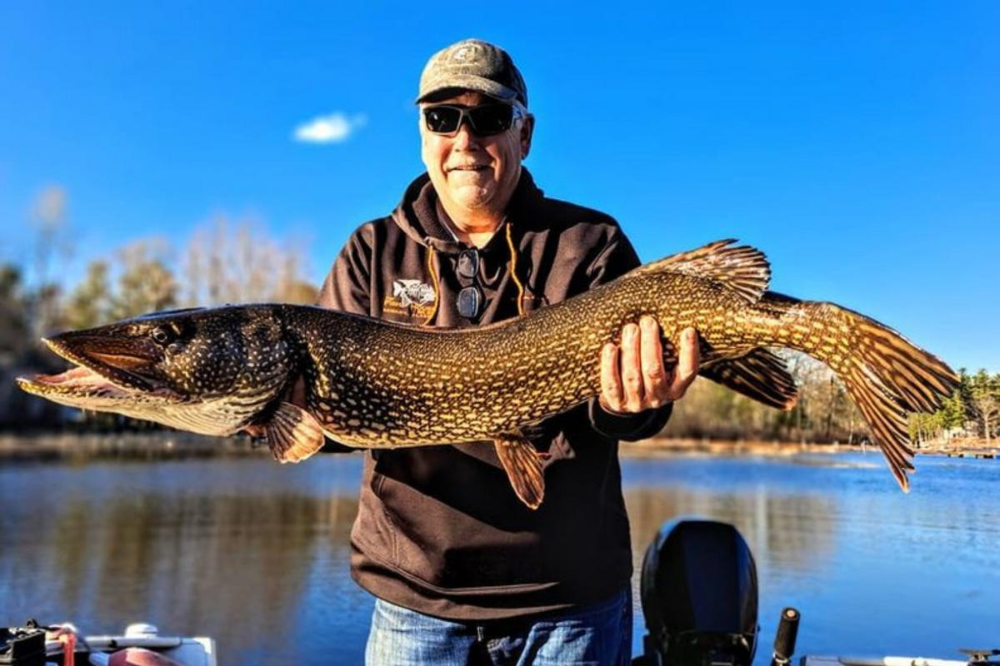
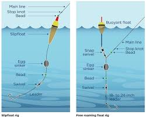
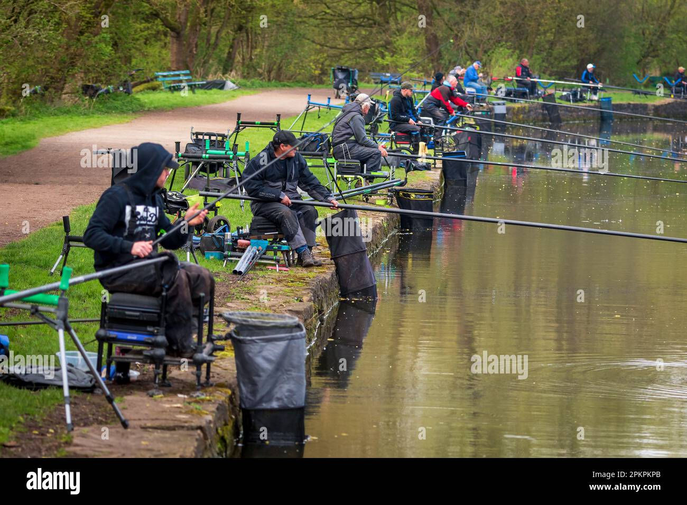

Spoznajte različne ribolovne tehnike
V svetu ribolova obstaja veliko različnih tehnik in pristopov, ki so prilagojeni različnim vrstam rib in vodnim okoljem. Na tej strani vam predstavljamo najpogostejše tehnike ribolova, ki se uporabljajo v slovenskih vodah. Z izbiro prave tehnike boste izboljšali svoje možnosti za uspešen ulov in hkrati obogatili svojo ribiško izkušnjo.
Muharjenje

Beleženje (Spinning)

Talni ribolov

Vijačenje

Ribolov s plovčkom

Več ribolovnih tehnik

Match ribolov
Napredna tehnika ribolova, ki se uporablja predvsem na tekmovanjih za lov belih rib.